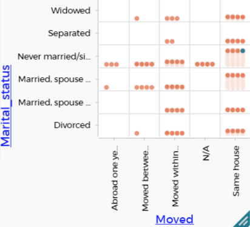

18 Visualizing and Communicating
CODAP’s graphs are limited. I think that’s a good thing in this context, because entering into the world of visualizations would be a distraction. Really, it’s a whole nother course.
In our work with the students, we focus on communicating well with the graphs that CODAP makes available. A big part of that is helping them see just what’s possible. So we will do a bunch of that here, along with some introductory design philosophy.
18.1 CODAP graphs in general
In a graph, by default, CODAP represents each case as a dot.
As we mentioned up in the commentary for the summarizing data move, CODAP is oriented to individual cases that are “atomic” bits of data, for example, people in a Census, or moments of time in a record of some phenomenon. So dots are pretty good representations.
Every graph has, basically, two axes. When you put an attribute on an axis, each dot moves so that its location corresponds to its value for that attribute.
If the attribute is numeric or a date, the axis has numbers or dates, and CODAP centers the dot on that value. If the attribute is categorical, CODAP places the dot in a bin labeled by the categorical value. By separating the dots into bins, CODAP is grouping them: categorical plots give you a data move for free.
If you plop an attribute into the middle of a graph, the points color depending on the values of that “legend” attribute. That gives you a kind of third dimension in your graph, which you can use to show additional relationships, or to emphasize one of the attributes on an axis.
People seem to understand all of that intuitively, and it gets them pretty far. But there’s more.
18.2 CODAP Graphing Tips
The next few sections describe some of the features of CODAP graphs that you might not find on your own.
18.2.1 Palettes
Blue-green palettes are attached to the right side of a graph. There is a vertical array of icons; each one has a number of controls or choices inside it.
Palettes also appear when you select a table, a map, or a slider. We’ll describe those features here as well, even though this chapter is about visualization.
The palettes appear only when the graph or table is selected. That is, there is only ever one set of palettes on the screen at a time.
| icon | description |
|---|---|
| Rescale tool. Press to show all points or rescale column widths. | |
|
“Eyeball” palette. In a graph, use it to show or hide points. In a table, use it to set cases aside. |
|

|
“Ruler” palette. In a graph, display summaries (e.g., means, percents, standard deviation). In a table, make new attributes or export data. |

|
“Paintbrush” palette. Change the appearance of points in a graph. Control color, stroke, and size. |

|
“Snapshot” palette. Take a picture of the graph, and then export that picture. Edit the picture first if you wish in the Draw Tool. |
| Configuration palette. In a graph with a numeric axis, bin the data. Where appropriate, fuse dots into bars. | |
| Trash can. In a table (only), delete cases. |
You will frequently select cases, i.e., select points in Graph A, and then want to use the eyeball tool in graph B. If you just click in Graph B, however, you may change or eliminate the selection of points! The solution is to click on Graph B’s title bar. Then the selection from Graph A is preserved.
18.2.2 Re-ordering categoricals
If you make a graph with a categorical attribute, by default CODAP orders the alphabetically. Sometimes, this is maddeningly unhelpful!
In many cases, the solution is quick and easy: grab the categorical value by the name, and drag it where you want it.
xxx add example
18.2.3 Fusion Power: Bar charts
If you have made a categorical graph, you can change the default “dot” display into a bar chart, which may be more familiar.
Also, sometimes, when you have created summary values (such as the means of something for several groups)), it may be effective and appropriate to display those aggregate values as bars.
Make bars using the “configure” palette and choose the option Fuse Dots into Bars.
xxx add example
18.2.4 Histograms
How do you make a histogram in CODAP? You might expect (correctly) that you will fuse dots into bars at some point, but first you need to bin the data.
I am making a distinction here between bar charts and histograms. We just made bar charts when we fused dots with categorical values. Notice that they had spaces between the bars.
In a histogram, the data are numerical, and there is no gap between the bars.
The live illustration below has 1000 heights of people between 25 and 35 years old. We want to make the dot plot into a histogram. Do the following:
- Select the graph and open the configuration palette
- Choose Group into Bins.
The graph adjusts into bins; notice that each bin is 10 cm wide.
- Again in the configuration palette, choose Fuse Dots into Bars.
Now you have a histogram! Use the configuration palette to experiment with the other controls, such as the bin width.
You would think that if you put Gender on the vertical axis, that it would split the histogram. But as of May 2023, you will only get the binned version—not fused. Still useful, though!
18.2.5 Connecting lines
xxx add example
18.3 Student graphs and commentary

This graph leaves us in an “awash” state. It does show the data, and a careful reader can figure out some patterns, but it’s too busy, too complicated, too much work for the reader to understand what’s going on. As a good communicator, you want your audience to get your message as easily as possible. Sure, you want them to think, but you want them to start thinking already seeing what you see in the data.
So consider two things we could do about it. One is to turn dots into bars, and leverage the legend. The other is to make some a new summary attribute or two, and plot those.
Notice that both choices involve grouping and summarizing. The bars-and-legend version gives you one plausible graphic scheme for free; yet the DIY choice—making attributes—is more flexible, though for the moment it limits you to dots.
xxx more examples in the hopper
xxx include facet splitting, earlier in this chapter